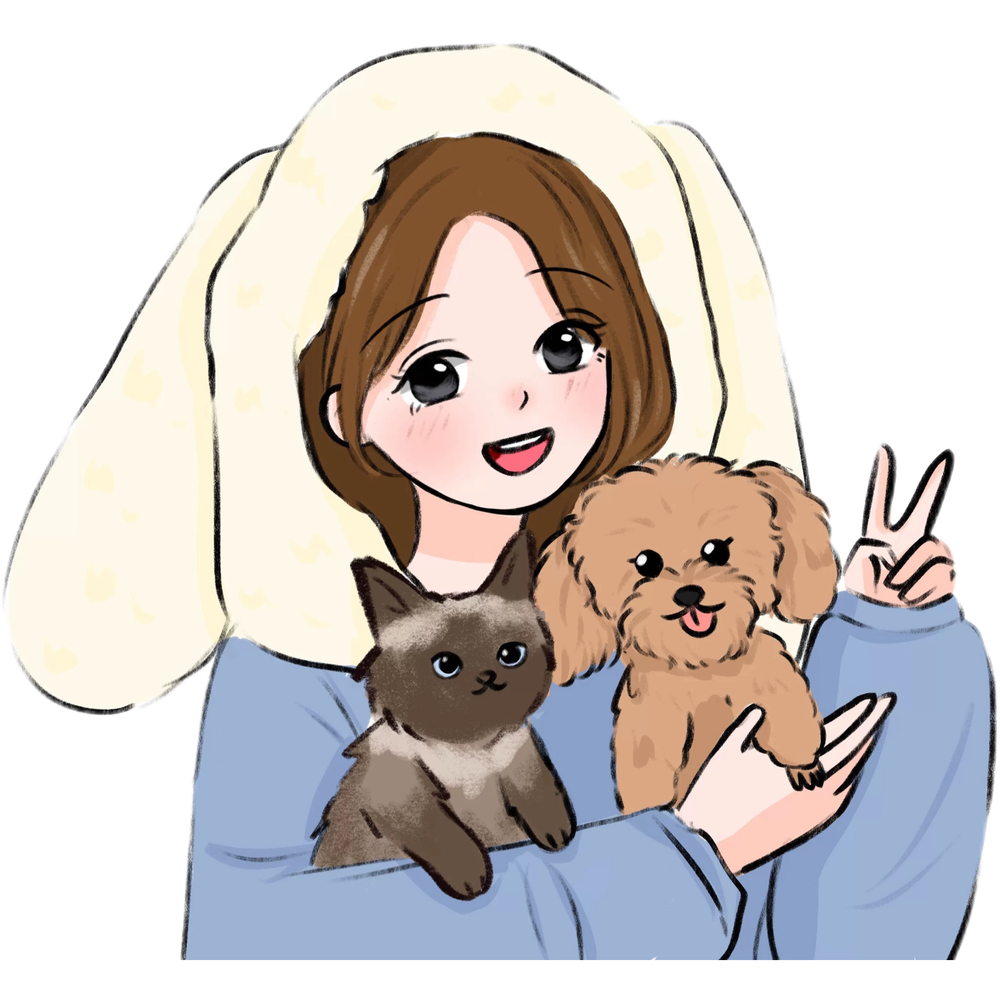
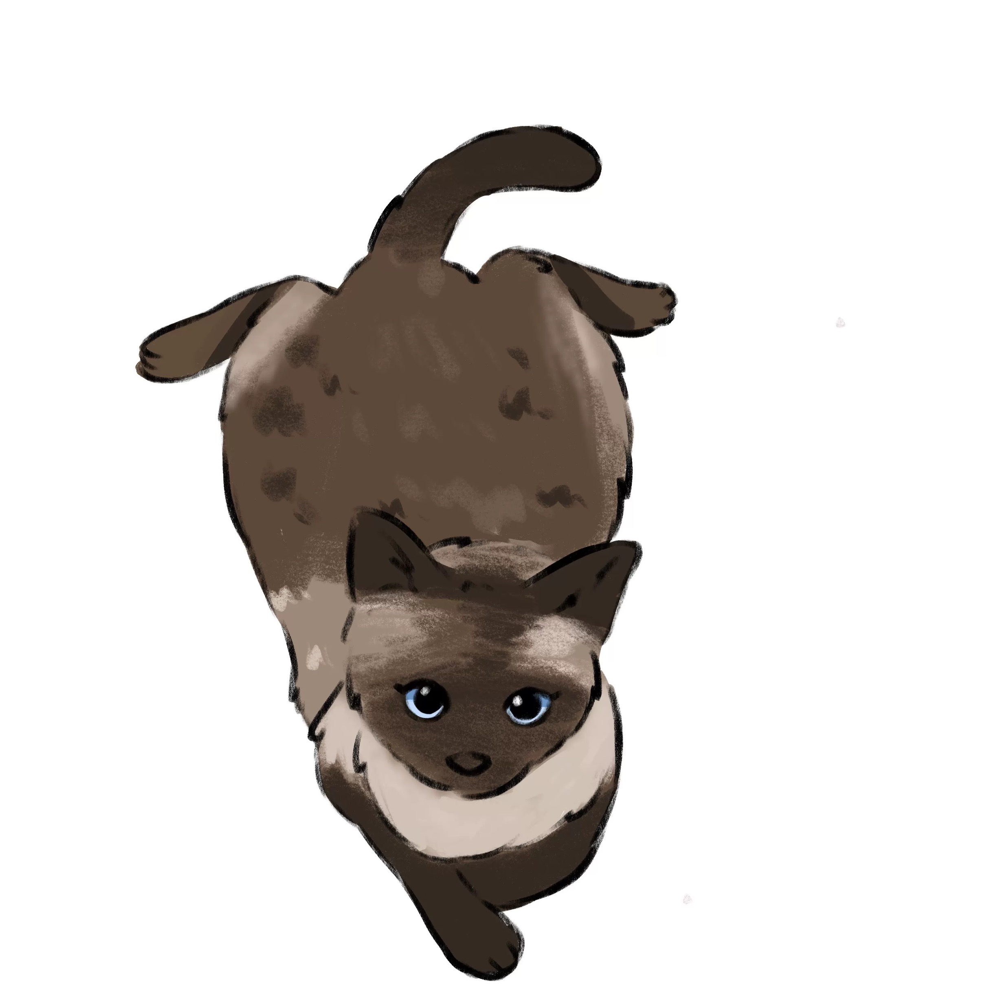
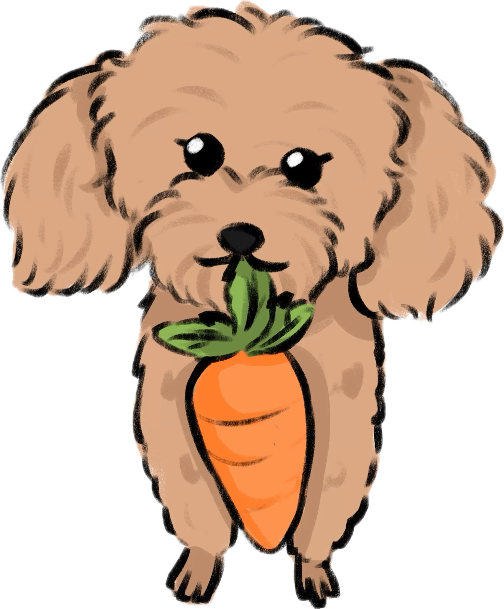

Hello
Hi, I'm Janine.



I'm Janine Dai. I studied International Economics and Trade before completing a Master of Commerce in Marketing and Data Analysis at the University of Sydney. Working across retail, distribution, and marketing has made me increasingly interested in product and category operations. I want to understand why customers choose a product, how an assortment responds to their needs, and what helps good ideas work in daily operations.
At Meet Fresh in Sydney, I have supported in-store promotions, visual content, and customer experience while working in a high-volume retail setting. Collecting customer feedback has helped me see how details in presentation, service, and communication shape the way people experience a product.
During a B2B distribution internship in China, I supported Dermalogica channel operations, coordinated with six enterprise clients, tracked weekly sales and channel metrics, and worked with colleagues on logistics and after-sales support. That experience showed me that product performance depends on more than promotion: availability, channel execution, and follow-through matter too.
My marketing projects and data analysis training give me another perspective. I have coordinated influencer campaigns and used Python and Tableau to present data clearly. I enjoy connecting firsthand observations with data, then turning both into decisions a team can act on. I am seeking a product operations, category operations, or related role where I can keep learning the path from customer insight to execution.
Background
Education &
Foundations.
Experience
Where I've
worked.
Operations & Channels
My role at Meet Fresh covered store operations, products, inventory, staff, and marketing execution. I carried out regular raw-material stocktakes and ordering, monitored stock levels, handled product listings and delistings, and controlled inventory for products on sale. I also analysed product sales data, collected customer feedback on products and service, and communicated frontline observations to management. On the marketing side, I executed in-store campaigns, coordinated promotional materials, assisted with product photography, and supported visual merchandising to keep the brand presentation consistent across customer touchpoints. I participated in staff interviews, training, and assessment. The store served more than 100 customer groups on a typical day and 250–300 during peak periods, requiring close attention to product availability, teamwork, and service standards.
During my internship in Dermalogica's B2B distribution business, I worked across several stages of the order and channel process. I followed up purchase orders and daily sales orders, checking contract terms, contract values, and product quantities. I assisted with key accounts, including individual orders valued in the millions of RMB. Externally, I coordinated with suppliers and channel partners involving e-commerce platforms and department stores, as well as six key enterprise clients. Internally, I communicated with supply chain, finance, and legal teams on order and contract matters and supported logistics and after-sales work. I also checked product information and reviewed weekly sales reports and channel metrics to track product penetration and distributor performance.
Marketing & Campaigns
I worked across the influencer campaign process on Rednote, from creator selection to content delivery. I coordinated with more than 100 creators overall and typically worked with 10–20 creators per campaign. At the sourcing stage, I assessed audience fit, content quality, and budget requirements, requested quotations, and discussed collaboration terms. During execution, I clarified product promotion needs, timelines, and deliverables with advertising clients, then coordinated creator availability, filming requirements, and asset delivery. I tracked production schedules and organised project information so that clients, creators, and the internal team had a shared understanding of the work and deadlines.
I supported influencer placements on Rednote and broader integrated marketing campaigns for the brand. My work included helping plan creator placements, sourcing and contacting influencers, discussing collaboration details, reviewing content direction, and checking content before publication. I built and maintained a database of more than 50 creator profiles for potential partnerships. During campaigns, I monitored placement data and prepared performance reports to inform subsequent adjustments, while supporting coordination across influencer and paid media channels. Top-performing posts from the campaigns exceeded one million views. The role gave me experience across creator selection, campaign execution, and post-publication analysis.
Selected Work
Portfolio
Projects.
Overview
Built a purpose-driven candle brand from scratch — positioning, identity, e-commerce, and a full-funnel digital marketing strategy centred on female empowerment and sustainability.
My Role
- Defined brand positioning around female empowerment archetypes (Mother, Career Woman, Wife, Trailblazer)
- Designed product concepts, packaging, and brand storytelling
- Planned full-funnel strategy across social, paid, email, and influencer channels
- Built e-commerce journey — website, landing pages, and content strategy
Outcome & Insight
Brand positioning must come before channel strategy — the message determines the medium.

Overview
Supported in-store marketing, visual content creation, and customer experience initiatives in a fast-paced dessert retail environment in Sydney.
My Role
- Designed promotional visuals and assisted with product photography for social media and in-store materials
- Supported visual merchandising and campaign materials to maintain brand consistency
- Collected customer feedback and shared insights with management to improve service and marketing effectiveness
- Worked in a high-volume retail environment, serving 100+ customer groups daily and up to 250–300 during peak periods
Outcome & Insight
Strengthened the connection between customer-facing retail operations and marketing execution by turning daily customer interactions into practical brand and service insights.
Overview
Supported brand exposure through a live children's fashion show featuring end-to-end influencer coordination — from talent sourcing to on-site execution and post-event content review.
My Role
- Sourced and selected child influencers based on audience fit and brand alignment
- Coordinated schedules, budgets, and all stakeholder communications
- Managed on-site execution including children coordination and parent seating
- Reviewed and approved influencer-generated content (video & posts) post-event
Outcome & Insight
Experiential + influencer creates compounding engagement that digital-only campaigns cannot replicate.
Overview
Applied Python and Tableau to transform complex datasets into business-ready visual stories — consumer complaint mapping, school enrollment forecasting, and e-commerce correlation modelling.
My Role
- Geographic consumer complaint analysis across US states using Tableau
- School enrollment forecasting using Linear, Huber, and TheilSen regression models
- E-commerce variables heatmap for correlation analysis across business metrics
Outcome & Insight
Data storytelling is a core marketing skill — the best analysis means nothing without a clear visual narrative.
Overview
Repositioned a heritage Chinese beverage brand for Gen Z through product redesign, a refreshed visual identity, and multi-channel integrated campaigns executed across multiple locations.
My Role
- Developed "morning ritual" brand repositioning concept and product story
- Designed limited-edition merchandise and refreshed visual identity
- Executed integrated campaigns — direct, community (WeChat), and promotions
- Managed multi-location sales activations and on-ground execution
Outcome & Insight
Heritage brands need a bridge narrative — honouring the past while clearly signalling evolution.
Explore
Tools &
Certifications.
What I work with
Analytics & Data
Marketing Platforms
Content & Design
Operations & Productivity
Core Capabilities
Certifications
Contact
Let's
connect.
Open to opportunities in digital marketing, brand coordination, and operations. I'd love to hear from you.